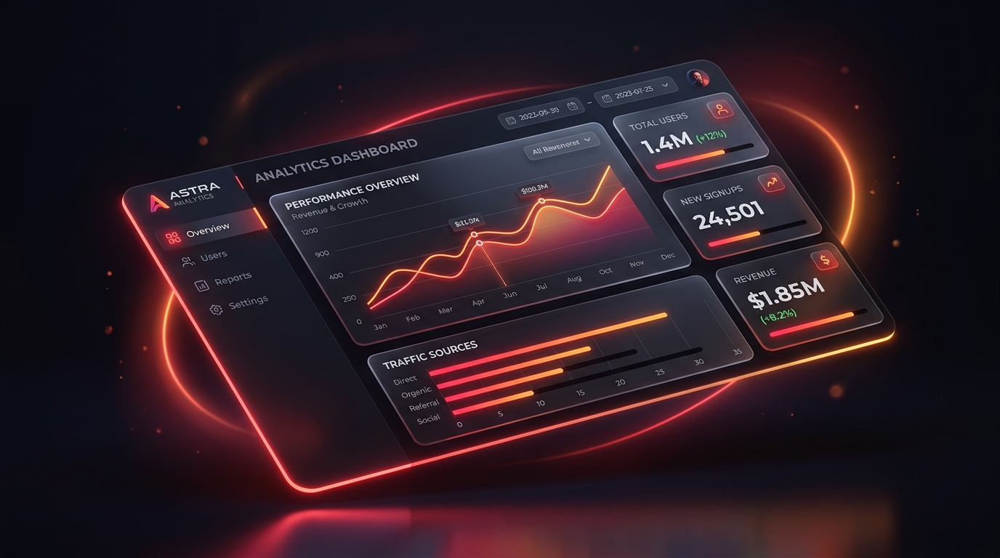

Why Bespoke Web Design Outperforms Generic Templates in 2026: The Ultimate ROI Guide
Discover why high-growth brands are moving away from bloated website builders toward custom-engineered digital experiences that deliver higher conversions, superior organic SEO rankings, and distinctive brand credibility.
Read Full Blueprint →